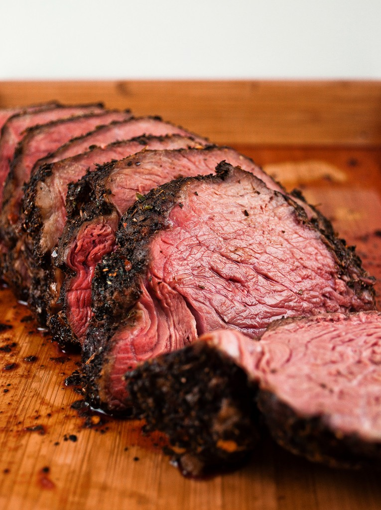

Tri-tip Roast

Ingredients
- 2lbs Tri-tip Roast
- Garlic powder
- Black pepper
- Kosher salt
Steps
- preheat oven to 425°F
- Mix the spices together in a 1:1:1 ratio by weight
- Use 2Tbsp of the mixture to cover the roast with and let sit for half an hour
- Cook for 30 minutes then check the internal temp
- Continue to cook checking the temp every 5 minutes until the internal tempeture is 130°F
- Let the roast rest befor slicing
Slicing Tips
The grain of a Tri-tip runs in 2 directions similarly to brisket always make sure to cut accross the grain and not with it.